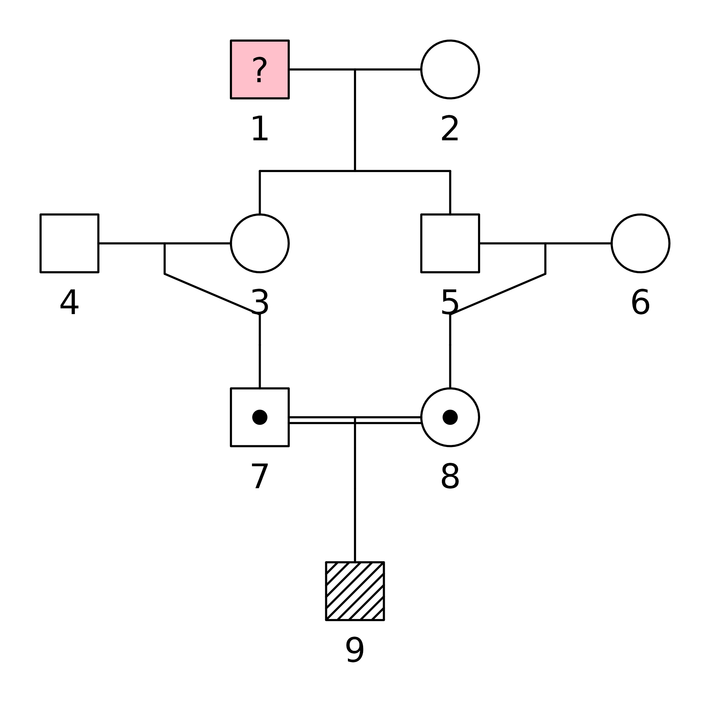

Getting started with the ped suite
pedsuite.RmdInstallation
The following command installs the latest official versions of the ped suite packages:
install.packages("pedsuite")Alternatively, you can install the development versions from GitHub:
# install.packages("devtools")
devtools::install_github("magnusdv/pedsuite")If you only need a few of the packages, you may choose to install them individually instead of the entire collection.
A quick tour
The aim of this vignette is to illustrate just a few of the possibilities of the ped suite packages. Of course, we barely scratch the surface here, and several packages are not even mentioned. For a more comprehensive overview, I recommend the book.
To get started we load the pedsuite package, which is a convenient shortcut for loading all the core packages, making their methods available in the current R session.
library(pedsuite)
#> Loading required package: forrel
#> Loading required package: pedtools
#> Loading required package: pedmut
#> Loading required package: pedprobr
#> Loading required package: ribd1. Create a pedigree (pedtools)
We begin by creating and plotting a pedigree with a child of first cousins:

For symmetry let us change the sex of individual 3. We also highlight the child by hatching his symbol, and we only include his ID label in the plot.

2. Calculate the inbreeding coefficient (ribd)
The inbreeding coefficient \(f\) of a pedigree member is defined as the probability of autozygosity at a random autosomal locus. That is, the probability that the two homologous alleles have the same origin within the pedigree.
For a child of first cousins one can work out by pen and paper that \(f = 1/16\). Alternatively, we can calculate it with the ribd function inbreeding().
inbreeding(x, ids = 9)
#> [1] 0.0625The output agrees with \(f = 1/16\).
3. Realised inbreeding (ibdsim2)
For any particular child of first cousins, the actual autozygous fraction of the genome (except X & Y) is called the coefficient of realised inbreeding, denoted \(f_R\). This may deviate substantially from the pedigree-based expectation \(f = 1/16\).
We can simulate the distribution of \(f_R\) with the ibdsim2 package. Since this is not a core package we must load it separately.
First, we use the function ibdsim() to simulate the recombination process in the entire pedigree, 200 times:
sims = ibdsim(x, N = 200, seed = 123)
#> Simulation parameters:
#> Simulations : 200
#> Chromosomes : 1-22
#> Genome length: 2753.93 Mb
#> 2602.29 cM (male)
#> 4180.42 cM (female)
#> Recomb model : chi
#> Target indivs: 1-9
#> Skip recomb : -
#> Total time used: 9.65 secsNow extract the autozygous segments of each simulation.
fr = realisedInbreeding(sims, id = 9)Here is a summary of the first 6 simulations, including the number of segments and various length statistics:
head(fr$perSimulation)
#> nSeg meanLen totLen maxLen minLen fReal
#> 1 18 12.04964 216.8935 35.11428 0.2658601 0.07875777
#> 2 12 14.89156 178.6987 48.86386 0.2469086 0.06488857
#> 3 16 16.54443 264.7109 66.83864 0.4071844 0.09612108
#> 4 9 24.45525 220.0973 61.67048 0.9938968 0.07992111
#> 5 20 15.68533 313.7066 53.35902 1.3336400 0.11391226
#> 6 13 14.04913 182.6387 41.60738 0.1404723 0.06631925And here is a histogram of the realised inbreeding coefficients (given in the right-most column above):
hist(fr$perSimulation$fReal, xlim = c(0, 0.15), breaks = 16, xlab = "f_R", main = NULL)
# Expected value
abline(v = 1/16, col = 2)
As we see, the distribution centres around the expectation \(f = 1/16 = 0.0625\) (red vertical line) but has substantial spread. The sample standard deviation can be found in fr$stDev, which in our case is 0.024.
4. Marker simulation (forrel)
Note that everything we have done so far has been purely theoretical, with no markers involved. In medical and forensic applications we usually work with genetic data in the form of marker genotypes, so let us simulate such a dataset for our family.
The markerSim() function of the forrel package simulates the genotypes of pedigree members for a specific type of markers. For instance, here we produce 500 SNPs with alleles A and B (equally frequent, by default):
y = markerSim(x, N = 500, alleles = c("A", "B"))
#> Unconditional simulation of 500 autosomal markers.
#> Individuals: 1, 2, 3, 4, 5, 6, 7, 8, 9
#> Allele frequencies:
#> A B
#> 0.5 0.5
#> Mutation model: No
#>
#> Simulation finished.
#> Calls to `likelihood()`: 0.
#> Total time used: 0.01 seconds.We can see the genotypes of the first few markers by printing y to the console.
y
#> id fid mid sex <1> <2> <3> <4> <5>
#> 1 * * 1 A/B A/B A/B B/B A/A
#> 2 * * 2 A/B A/B B/B A/B B/B
#> 3 1 2 2 B/B A/B A/B B/B A/B
#> 4 * * 1 A/A A/A B/B A/A B/B
#> 5 1 2 1 B/B A/B A/B A/B A/B
#> 6 * * 2 A/B A/B B/B A/B A/B
#> 7 4 3 1 A/B A/A A/B A/B B/B
#> 8 5 6 2 B/B A/B B/B A/B A/B
#> 9 7 8 1 B/B A/A A/B B/B B/B
#> Only 5 (out of 500) markers are shown.5. Inference of pairwise relationships (forrel)
If this was a real dataset, a natural quality control step would be to check correctness of the pedigree. One way to do this is to use the data to estimate each pairwise relationship, and compare the result with the pedigree. The function checkPairwise() does all of this, and presents the result in a relationship triangle.
checkPairwise(y, plot = TRUE)
#> Warning:
#> Individual '9' is inbred (f = 0.0625)
#> Kappa coefficients are only defined for non-inbred individuals.
The plot shows that all pairwise estimates are near their expected location in the triangle. (The yellow symbols correspond to pairs involving the inbred child, which don’t have a well-defined position in the triangle.)
Where to go from here
If you enjoyed this quick tour and would like more details, you should check out the GitHub README files of the packages that interest you.
There is also the pedtools vignette, with a lot more details on how to create and plot pedigrees in R.